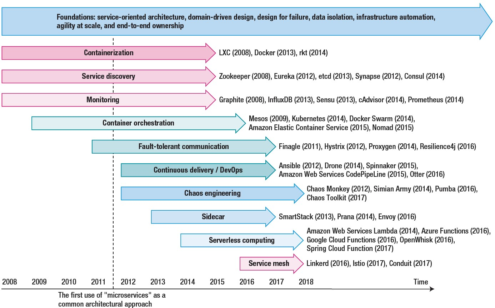

Microservizi¶
L’architettura a microservizi rappresenta l’apice di un’evoluzione (mshistory) che ha visto i sistemi informatici trasformarsi da semplici programmi a complicate infrastrutture distribuite. Le principali tappe che hanno segnato questo cambiamento possono essere visualizzate come segue:
{kind=link}
Le motivazioni che spingono le aziende industriali verso i microservizi sono molteplici e spesso legate alla necessità di gestire sistemi complessi e scalabili, migliorare la resilienza, accelerare l’innovazione, e supportare la trasformazione digitale.
Motivazioni all’uso dei microservizi¶
L’architettura a microservizi offre la flessibilità necessaria per rispondere a queste sfide, permettendo alle aziende di adattarsi più facilmente alle evoluzioni del mercato e alle esigenze operative.
Motivazione |
Descrizione |
|---|---|
Scalabilità |
Permette di scalare specifici servizi in base alla domanda, ottimizzando le risorse. |
Manutenibilità |
Ogni servizio è indipendente, facilitando aggiornamenti e manutenzione senza impatti globali. |
Resilienza |
I guasti di un microservizio non compromettono l’intero sistema, migliorando l’affidabilità. |
Deployment Continuo |
Consente di implementare nuove funzionalità senza downtime, grazie a CI/CD. |
Flessibilità Tecnologica |
Permette l’uso di linguaggi e tecnologie differenti per ogni microservizio. |
Efficienza Operativa |
Riduce i tempi di sviluppo e rilascio grazie alla modularità e all’automazione. |
Integrazione con IoT e Big Data |
Facilita l’integrazione con sensori industriali e analisi dati avanzate. |
Motivazione |
Descrizione |
|---|---|
Le aziende industriali spesso gestiscono sistemi di produzione e automazione che richiedono una scalabilità elevata per supportare un numero crescente di sensori, macchine, impianti o clienti. L’architettura monolitica può diventare inefficiente quando i sistemi crescono in termini di carico e complessità. Microservizi: Permettono di scalare singoli componenti (servizi) indipendentemente, senza dover scalare l’intera applicazione. Ciò è utile quando alcuni servizi, come l’elaborazione dei dati dei sensori o l’analisi in tempo reale, richiedono più risorse rispetto ad altri. Questo riduce i costi e ottimizza l’uso delle risorse. |
|
I sistemi industriali tendono a diventare molto complessi e possono richiedere aggiornamenti continui per adattarsi a nuove tecnologie o standard di settore. La manutenzione di una grande applicazione monolitica può essere difficile e costosa, con rischi di downtime elevati. Microservizi: Consentono di aggiornare e mantenere singoli componenti senza interrompere l’intero sistema. Le aziende possono effettuare modifiche e aggiornamenti a singoli servizi in maniera più rapida e con minori rischi, migliorando la produttività e riducendo il rischio di guasti durante gli aggiornamenti. |
|
In ambito industriale, le aziende spesso necessitano di sviluppare nuove funzionalità in tempi rapidi per rispondere a nuove richieste del mercato, integrare nuovi macchinari o tecnologie, o offrire nuove soluzioni ai clienti. Gli approcci monolitici rallentano lo sviluppo perché richiedono la coordinazione tra più team su un’unica base di codice. Microservizi: Permettono ai team di sviluppo di lavorare in parallelo su servizi separati, con cicli di sviluppo indipendenti. Questo riduce i tempi di rilascio delle nuove funzionalità, migliorando il time-to-market delle innovazioni, e consente alle aziende di rispondere più rapidamente alle esigenze del settore. |
|
Le aziende industriali spesso utilizzano una vasta gamma di tecnologie e strumenti, che vanno dai sistemi legacy agli impianti moderni basati su IoT (Internet of Things) o AI. Una singola tecnologia o piattaforma potrebbe non essere adatta per tutti i casi d’uso. Microservizi: Consentono di utilizzare diversi stack tecnologici per servizi diversi, permettendo alle aziende di scegliere la tecnologia più adatta per ogni componente del sistema. Questo offre una grande flessibilità e consente di integrare più facilmente nuovi strumenti o tecnologie all’interno dell’architettura aziendale. |
|
Le aziende industriali richiedono un’alta affidabilità nei loro sistemi, poiché anche brevi interruzioni nei processi produttivi possono causare perdite significative. In un’applicazione monolitica, un errore in un singolo componente può bloccare l’intero sistema. Microservizi: Migliorano la resilienza poiché i servizi sono isolati e l’errore di un singolo servizio non comporta necessariamente il fallimento dell’intero sistema. Questo approccio permette di costruire architetture più robuste e con capacità di recupero automatico (self-healing), minimizzando l’impatto di eventuali guasti. |
|
La trasformazione digitale è una priorità per molte aziende industriali, che puntano a modernizzare i loro impianti e processi tramite automazione, IoT, AI e analisi avanzata dei dati. Un’architettura monolitica può essere difficile da adattare a queste esigenze, limitando l’integrazione di nuove tecnologie. Microservizi: Facilitano l’integrazione di nuovi paradigmi tecnologici come l’IoT, l’Industria 4.0 e la manutenzione predittiva. Offrono un’architettura flessibile per gestire grandi quantità di dati in tempo reale e permettono alle aziende di implementare strategie di trasformazione digitale in modo più efficace. |
|
L’automazione e il deployment continuo sono fondamentali per aziende che gestiscono complessi sistemi produttivi distribuiti in diverse località. La configurazione e il deployment di una grande applicazione monolitica possono essere lenti e complessi. Microservizi: Si adattano bene agli approcci DevOps e CI/CD (Continuous Integration/Continuous Deployment). Permettono di automatizzare il deployment di singoli servizi e di gestire in modo efficiente l’infrastruttura distribuita tramite container e orchestratori come Docker e Kubernetes. Ciò accelera il rilascio di nuove versioni e migliora l’efficienza operativa. |
|
Le industrie devono spesso rispettare normative complesse (es. norme di sicurezza o ambientali) che possono variare a seconda della regione o del mercato. L’aggiornamento di un’applicazione monolitica per garantire la conformità in più giurisdizioni può essere difficile e rischioso. Microservizi: Consentono alle aziende di implementare logiche di conformità e requisiti regolatori specifici solo nei servizi necessari, senza dover modificare l’intero sistema. Questo facilita l’adattamento delle applicazioni alle normative locali e alle regole settoriali. |
|
Il monitoraggio in tempo reale è cruciale per le aziende industriali che gestiscono processi produttivi, dove il rilevamento immediato di guasti o inefficienze può prevenire danni o interruzioni. Microservizi: Facilitano il monitoraggio dettagliato di ogni servizio e componente, offrendo una maggiore visibilità sui processi. I microservizi possono essere monitorati in modo indipendente, permettendo di analizzare i problemi in tempo reale e migliorare le prestazioni del sistema globale. |
|
In ambito industriale, le applicazioni devono spesso integrarsi con una varietà di sistemi legacy, impianti di produzione, robotica, sensori e strumenti di terze parti. Integrare queste dipendenze in un’applicazione monolitica può essere complesso e richiede un approccio monolitico pesante. Microservizi: Ogni servizio può gestire la propria integrazione con strumenti e tecnologie specifiche, riducendo la complessità e migliorando l’interoperabilità tra sistemi diversi. L’uso di API ben definite facilita l’integrazione e la comunicazione tra i vari componenti. |
Problematiche dei microservizi¶
I microservizi ntroducono anche diverse problematiche e sfide rispetto all’approccio monolitico tradizionale basato su POJO.
Problematica |
Descrizione |
|---|---|
|
|
|
|
|
|
|
|
|
|
|
|
|
|
|
|
|
|
|
Progettazione dei microservizi¶
Richardson: https://microservices.io/index.html
Richardson Understanding Microservices (si veda il video): https://microservices.io/microservices/2020/02/04/jfokus-geometry-of-microservices.html
Richardson Microservice architecture patern languages: https://microservices.io/patterns/index.html
Richardson Decomposizione per sottodominio: https://microservices.io/patterns/decomposition/decompose-by-subdomain.html :
Richardson Microservice Architecture: https://microservices.io/patterns/microservices.html :
Api Gateway, Service Discovery, Circuit Breaker, Event Sourcing, CQRS, Saga, etc.
Il concetto di aggregator. Un possibile riferimento https://medium.com/nerd-for-tech/design-patterns-for-microservices-aggregator-pattern-99c122ac6b73
Tematche sul progetto dei microservizi¶
API Gateway
Service catalogs and orhestrators
Microservices aggregators
Microservices patterns (MicroservicePatternLanguage.pdf Richardson)
Circuit Breaker
Service Discovery
Load Balancing
Bulkhead Pattern
Retry
Saga Pattern
Event Sourcing
CQRS
Distributed Tracing
Monitoring and Logging
Security
Deployment Automation
Testing Strategies
Continuous Integration/Continuous Deployment (CI/CD)
DevOps Culture
Nanoservizi¶
Un nanoservizio rappresenta un’evoluzione più radicale del concetto di microservizio. La differenza principale sta nella granularità. Un nanoservizio è ancora più piccolo e svolge un compito molto più specifico di un microservizio. Spesso si occupa di un’unica operazione o di una singola responsabilità molto limitata.
Caratteristica |
Descrizione |
|---|---|
Un nanoservizio è progettato per svolgere un singolo compito atomico, come la convalida di un campo di input, la gestione di una richiesta HTTP o l’invio di una singola notifica. |
|
Il codice e la logica di un nanoservizio sono minimi, riducendo la complessità e rendendoli facilmente manutenibili, ma solo in contesti molto specifici. |
|
I nanoservizi portano all’estremo la filosofia della modularità e della separazione delle responsabilità. |
|
Poiché i nanoservizi sono estremamente piccoli, richiedono molta più comunicazione tra loro rispetto ai microservizi, il che può aumentare il traffico di rete e la latenza. |
|
Sebbene siano facili da manutenere, la distribuzione e l’orchestrazione di una vasta quantità di nanoservizi può diventare molto complessa. |
I Nanoservizi:
Potrebbero essere usati in contesti in cui si vogliono implementare operazioni estremamente semplici e modulari, ad esempio in un’architettura serverless.
Si adattano bene quando si ha bisogno di risposte rapide a eventi specifici, come la convalida di campi o la gestione di eventi atomici.
La loro complessità di gestione (soprattutto in fase di orchestrazione e comunicazione) li rende meno adatti a progetti di grandi dimensioni o in team più tradizionali.
Possono essere utili per i dispositivi IoT edge, ovvero dispositivi con capacità limitate o che devono operare in ambienti con poche risorse (ad esempio, dispositivi a bassa potenza, sensori remoti, ecc.). minimizzando il carico di elaborazione, permettendo operazioni più mirate ed efficienti.